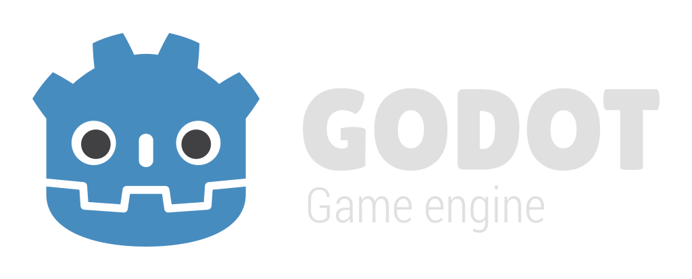

Loader
Editor
×
Game
×
Select video driver:
WebGL
WebGL 2

$GODOT_VERSION
Need an old version?
Preload project ZIP:
(Try this for example)
Start Godot editor
Clear persistent data
HTML5 canvas appears to be unsupported in the current browser.
Please try updating or use a different browser.
HTML5 canvas appears to be unsupported in the current browser.
Please try updating or use a different browser.